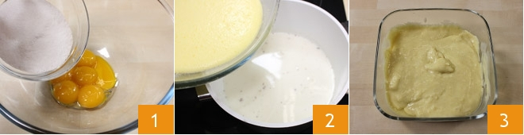
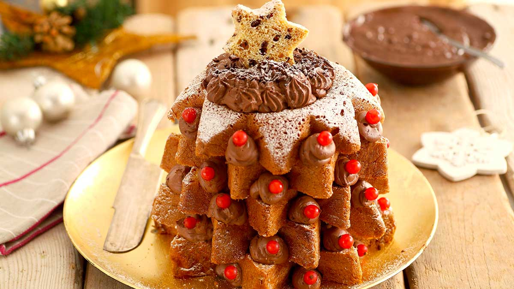

The Alberels Ricet

Difficoltà:Molto Bassa
Cottura:10 min
Preparazione: 20 min
Dosi per: 4 persone
Costo:Basso
Gli alberelli di pandoro con crema pasticcera e ribes sono degli sfiziosi e allegri dessert da servire durante le feste di Natale, come fine pasto o come merenda.
I pandorini vengono tagliati a fette e ricomposti una fetta sull'altra a mò di alberello natalizio, con una farcitura tra uno strato e un altro di golosa crema pasticcera alla vaniglia. La decorazione finale prevede poi ciuffi di crema pasticcera e chicchi di melagrana, ribes e piccoli mirtilli ai lati, proprio come se fossere delle palline di Natale. Preparare gli alberelli è molto facile e veloce, vi basterà realizzare la crema pasticcera prima e poi assemblarli all'ultimo momento! Gli alberelli di pandoro con crema pasticcera e ribes sono dessert particolarmente invitante, bello da vedere e costituiscono un’ottima alternativa alla classica fetta di pandoro!
INGREDIENTI
- Pandoro:piccoli 4
- Ribes:4-5 grappolini
- Mirtilli:10
- Melagrana: chicchi di mezza
- Zucchero:a velo q.b.
PER LA CREMA PASTICCERA
- Latte: fresco intero 250 ml
- Uova:3 tuorli
- Zucchero:75 gr
- Farina: 25 gr
- Vaniglia:mezza bacca
PREPARAZIONE
Per preparare gli alberelli di pandoro con crema pasticcera e ribes, preparate per prima cosa la crema (guarda qui per uteriori indicazioni): fate scaldare il latte a fuoco basso con la mezza bacca di vaniglia aperta; intanto sbattete bene i tuorli con lo zucchero (1) e unite la farina setacciata, quindi aggiungete questo composto al latte (2) e mescolate sempre a fuoco basso con una frusta. Fate addensare la crema e fatela raffreddare (3) in frigorifero con un foglio di pellicola a contatto.
Prendete i pandorini, sdraiateli sul fianco e tagliateli a fette dello spessore di circa 1 cm e mezzo, in modo da ottenere delle sezioni a forma di stella (4). Per ottenere una stella che sarà la punta dell’alberello, ritagliate con un tagliapasta a forma di stella la base del pandorino, rotonda e piatta (5-6).

Trasferite la crema pasticcera in una sac-à-poche e ponete la fetta più larga del pandorino su di un piatto da portata, quindi iniziate ad assemblare gli alberelli. Mettete al centro della fetta sul piatto un po' di crema, poi coprite con un’altra fetta più piccola di pandorino, facendo attenzione ad intersecare (e non a sovrapporre) le punte delle stelle (7-8): continuate così con fette sempre più piccole, fino all’esaurimento delle stesse, guarnendo ogni fetta con la crema. In questo modo avrete ottenuto un piccolo alberello di Natale di pandoro; ripetete la stessa operazione anche per gli altri tre pandorini. Spolverizzate con lo zucchero a velo le stelle sagomate (9) ottenute in precedenza.

Adagiate la stella sagaomata sulla sommità del pandorino, utilizzando la crema come collante (10). A questo punto lavate e asciugate velocemente i ribes, togliendo ogni singolo frutto dal grappolo, lavate anche i mirtilli e sgranate la melagrana. Spremete dei ciuffetti di crema sulle punte dell'alberello (11) e adagiate frutti rossi, come se fossero palline di Natale, sfruttando l’azione collante della crema pasticcera(12). Cospargete il tutto di abbondante zucchero al velo, come se fosse neve, e servite subito i vostri alberelli di pandoro con crema pasticcera e ribes!

CONSERVAZIONE
Conservate gli alberelli di pandoro in frigorifero coperti per al massimo 1 giorno. Si sconsiglia la congelazione.
CONSIGLIO
Potete preparare gli alberelli di pandoro anche qualche ora prima, ma non cospargeteli di zucchero al velo: avvolgeteli nella pellicola trasparente e metteteli nel frigorifero. Qualche minuto prima di servirli, tirateli fuori dal frigorifero, cospargeteli di zucchero al velo e serviteli. Potete decorare i vostri alberelli di pandoro anche con del cioccolato fondente fuso oppure con della glassa all'acqua.
